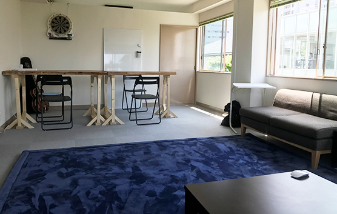

ユニバ株式会社は、デザイナーとデベロッパが在籍する少人数のチームです。
渋谷区のオフィスでは、数多くのクライアントとブランディング、広告キャンペーン、ウェブサービスのプロジェクトを進めています。またワークショップや勉強会を開き、新しい技術とユーザエクスペリエンスについて意見交換を行っています。また「サーキット・ラボ」では、リアルタイム映像、Arduino等を用いた回路実装、リアルタイムウェブをはじめとした、メディアアートと隣接する分野の研究をしています。
それぞれ異なる得意分野をもった10数名のメンバーと共に、新しい技術、新しい表現、新しいアイディアを追求できる方を募集します。
募集する職種
- アシスタントマネージャー
- エンジニア、デザイナーのコミュニケーション補佐 (Eメール, 電話, 文書作成, リサーチ等)
- 学生アルバイト/インターン
- アシスタントエンジニアとして、スマートフォン／PC向けのウェブサービスの開発、
ウェブサイト構築、アプリの開発
プロジェクトのメンバーとして、スキルレベルに応じたパートの設計・実装
必要なスキル
- アシスタントマネージャー
- スケジュール管理、タスク管理、文書作成
- 学生アルバイト/インターン
- 意欲のある学生の方
- 基本スキル
- HTML/CSSの経験
DOM、ネットワークの知識
勤務地
東京都渋谷区神宮前5-34-4 ジェイハウス B1F
勤務時間
- フレックスタイム制（コアタイム11:00〜15:00）
- 180～220時間/月程度
給与
- アシスタントマネージャー
- 月額 200,000～350,000円/月
賞与 業績による (賞与は年4回・全員賞与と個人賞与を業績により支給）
- 学生アルバイト/インターン
- 時給1000円以上、相談により決定 賞与なし (交通費全額支給、福利厚生は制限あり)
- 全職種
- 査定年４回（四半期単位の個人レビューで給与を決定）
待遇
- 福利厚生
- 健康保険 (関東ITソフトウェア健康保険組合)
厚生年金
雇用保険
- 住宅補助
- 渋谷区神宮前5-34-4からの直線距離で区間分けをし、住んでいる場所との距離に応じた補助制度があります。
- 第1区 半径2キロ以内 6万円
- 第2区 半径4キロ以内 4万円
- 第3区 半径6キロ以内 2万円
- 第4区 半径8キロ以内 1万円
- 第5区 半径8キロ以上 0円
- 引越補助
- 渋谷区神宮前5-34-4からの直線距離で区間分けをし、引っ越す場所との距離に応じた補助制度があります。
- 同一エリア内 0円
- より遠いエリアへ : 0円
- 1区近いエリアへ : 2万円
- 2区近いエリアへ : 3万円
- 3区近いエリアへ : 4万円
- 4区近いエリアへ : 5万円
- その他補助
- ハードウェア、ソフトウェア等の購入補助 (Mac、スマートフォン、タブレット購入時の補助等があります)
- 交通費
- 上限1万円、自転車通勤制度・駐輪場あり
休日・休暇
週休2日（土・日）、祝祭日、夏期休業、年末年始休業、有給休暇有
応募方法
メールにてご応募ください。
メールの件名を「採用希望（職種）」とした上で、
- 氏名、住所、連絡先、経歴等を含むプロフィール
- 志望動機
- 募集職種においてご自身が活かせると考えるスキル
- 経験についてのアピール
を明記の上、recruit@uniba.jpまで、お送りください。
ワークスタイル
出社時間はそれぞれ個人が決めるスタイルです。チャットのオンライン、オフラインで出勤を管理したり、Google Calendarの自動集計で時間管理を行っています。
作業場所はオフィス内のソファ、こたつ、フリーアドレスのデスクを使うことができます。コアタイム以外であればカフェや自宅作業も可能です。
自転車通勤をするスタッフも多いです。自転車保険にしっかり入っていることが条件です。

オフィスから徒歩3分の場所にあるサーキット・ラボには、電子工作に必要な装備や、3Dプリンタ、レーザーカッターなどが揃えてあります。